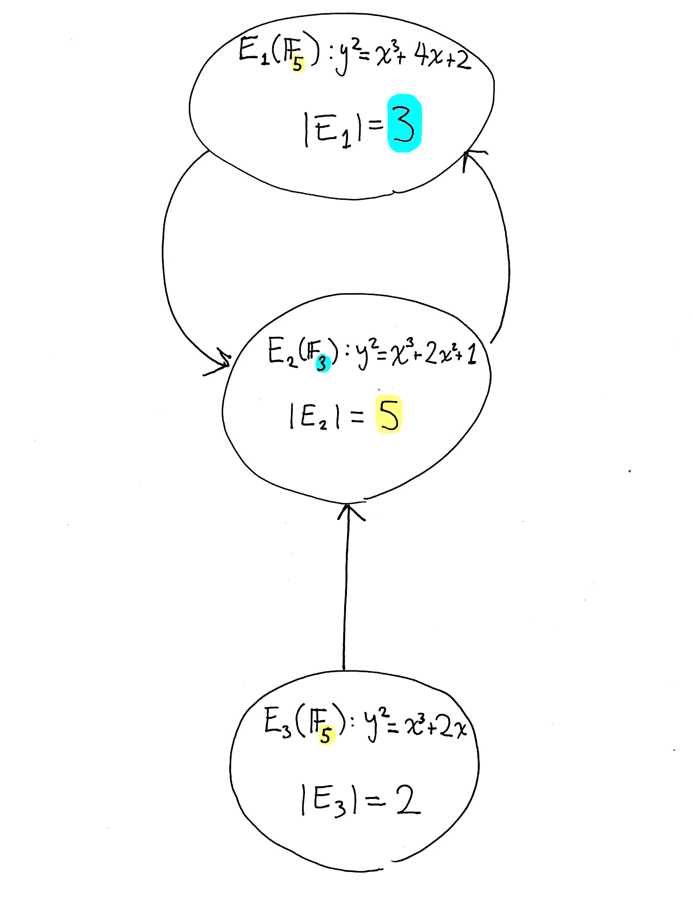

In order to efficiently compose SNARKs together, one wants a collection of elliptic curves with certain properties. The goal of this challenge is to discover and construct elliptic curves with these properties.
Let's understand in more detail what these properties are.
First, the basics.
If E is an elliptic curve defined over the field \mathbb{F}_q with a prime order r subgroup, we say E is pairing-friendly if r divides q^k - 1 for some k \leq 50. The embedding degree of E is defined to be the smallest such k.
Fact 1: A pairing-friendly elliptic curve with an order r subgroup yields a SNARK construction for proving things about computations that use \mathbb{F}_r arithmetic.
If you don't know what pairing-friendly curves are, please click on the above links for some background.
Now, if we want to compose proofs together, we'll need a SNARK for the computation of verifying those proofs. For this, it's useful to know the following fact about what kind of computation the SNARK verifier performs.
Fact 2: An elliptic-curve defined over \mathbb{F}_q yields a SNARK construction whose verification algorithm is efficiently expressed using \mathbb{F}_r arithmetic. This is because the Groth16 verifier just checks a few pairing equations.
Combining these two facts yields the following fact.
Fact 3: If you want to compose two (or more) SNARKs produced using a construction based on an elliptic curve E_1 defined over a field \mathbb{F}_q, you need an elliptic curve E_2 with a subgroup of order q.
That is, to check E_1's verifier, by fact 2 you need a SNARK which can check \mathbb{F}_q arithmetic, which by fact 1 means you need a curve with an order \mathbb{q} subgroup.
This naturally leads to the definition of a pairing-friendly graph of elliptic curves, which classifies arrangements of elliptic curves which enable composition of pairing-based SNARKs.
Definition: A paring-friendly graph of elliptic curves is a directed graph G = (V, A) along with some data associated to every vertex. Namely, for each vertex v \in V we have an elliptic curve E_v such that

Note that to each vertex v we can also associate a SNARK construction (say Groth16) for verifying \mathbb{F}_{r_v} arithmetic computations obtained using the elliptic curve associated to that vertex combined with fact 1.
This definition tells us that we can compose proofs whenever there's an edge.
Or put another way, if (u, v) is an edge, the SNARK construction associated to v can talk about proofs produced by the SNARK construction associated to u.
Or put another way, an edge (u, v) allows us to re-cast an \mathbb{F}_{r_u} computation as an \mathbb{F}_{r_v} computation.
When you check Coda's blockchain, you are checking a proof, that is checking a proof, that is checking a proof, ... and on and on until reaching the genesis block. It's important therefore that it be possible to compose proofs arbitrarily many times.
For this, we'd need a pairing-friendly graph that contains an arbitrarily long path of curves. There are two ways of achieving this:
Pairing-friendly elliptic curves are pretty rare, so I doubt option 1 is going to fly. Option 2 however is in fact realistic and Coda is built on the pairing-friendly cycle consisting of the curves MNT4-753 and MNT6-753.
So, if we want to do unbounded composition, we need a graph with a cycle. What's not clear though is why you would want anything but a cycle. That is, what is the use of the vertices in the graph that do not lie on the cycle?
The problem stems from the fact that we actually only know of one way to construct cycles of elliptic curves (namely, via MNT4/MNT6 cycles) and the curves in these cycles have bad parameters from an efficiency perspective: the curves have relatively low embedding degree (4 and 6) which means we must take the size of base field to be quite large (on the order of 768 bits) in order to achieve roughly 128 bits of security.
In Coda, this inefficiency affects not only the SNARK prover but leaks into the rest of the application as well. The reason is that our SNARK needs to certify all cryptographic computations in Coda (signatures, hashes, etc.) and so those primitives need to be efficiently described using \mathbb{F}_r arithmetic (where r is the order of one of the curves in our cycle). But r is large (about 753 bits in our case) which means outside of the SNARK, our cryptographic operations are a lot slower than they could be.
Moreover, this paper of Chiesa, Chua, and Weidner rules out a few potential strategies for constructing other cycles of elliptic curves. So, if we cannot find new cycles (though you may very well be able to, we just don't know how yet) we need another technique for reducing the impact of the large field size in known cycles.
This is where the other vertices in a pairing-friendly graph of curves come into play. Suppose our graph has a vertex v from which we can reach a cycle. Suppose moreover that r_v and/or q_v were relatively small compared to the parameters of the curves on the cycle. Say, r could be on the order of 2^{256}. Then we'd be in a good position: we could perform the bulk of the computation in our proofs in \mathbb{F}_r using the SNARK construction associated to v, and then just use the big curves in the cycle for composition and combining proofs. That is, just use the cycle for the relatively small computation of checking other verifiers.
Note that the construction described in the preceding paragraph doesn't use the whole graph but just a subgraph consisting of a path terminating in a cycle.
Let's give such a graph a name.
Definition: A lollipop of pairing-friendly curves is a graph of pairing-friendly curves which consists of a path terminating in a cycle. We'll call the path the "stick" of the lollipop. Note that a cycle of curves is a special case of a lollipop where the stick has length 0.
There is one more constraint we should place on the curves in any graph we consider if we want to get efficient SNARK constructions. Namely, for every vertex v in a given graph, we would like r_v - 1 to have a large smooth part.
The smooth part of a number is the largest divisor of that number which is smooth. Smooth means all the prime factors of that number are small. This smallness can be quantified: for example, a 7-smooth number is a number whose prime factors are all at most 7. Likewise, we can talk about the 7-smooth part of a number, which is the largest divisor of that number which is 7-smooth
Definition: Let's define a (k, n)-smooth pairing-friendly graph of curves to be a pairing friendly graph of curves such that for every vertex v in the graph, the k-smooth part of r_v - 1 is at least n.
For concreteness, a reasonable value of k is at most 13, and a reasonable value for n is at least 100,000. Smaller k and larger n would be better.
The reason one imposes this restriction is that if r_v has a large smooth part, one can more efficiently perform an FFT over the field \mathbb{F}_{r_v} which is part of the SNARK prover.
The goal of this challenge is to construct a (k, n)-smooth lollipop of pairing-friendly curves as described above such that every curve in the lollipop has at least 120 bits of security. The quality of a lollipop will be defined using a combination of the following criteria:
These parameters affect the efficiency of the overall construction in a specific but difficult to specify way, so we will take them all into account when judging submissions.
The best currently-known lollipop of curves is an MNT4/6 cycle with the following quality metrics:
Here are the parameters of the MNT4 curve and the MNT6 curve.
Your submission should consist of the following (the more items included the better):